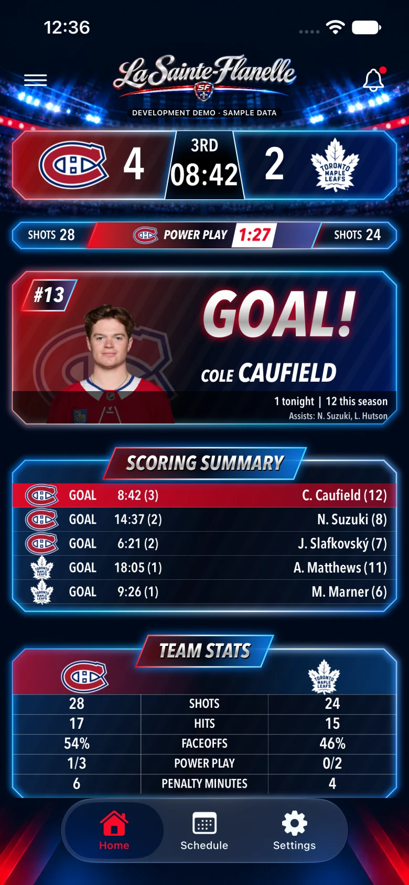
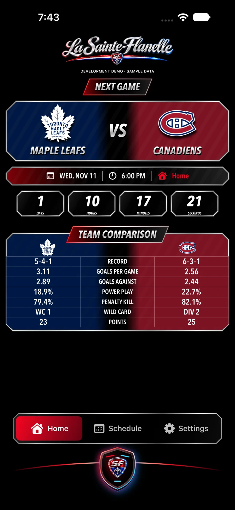

LE CH.EN GRAND.
Chaque match. Chaque but. Toute la passion. Le tableau de pointage iPhone qui te plonge dans la soirée des Canadiens, du compte à rebours à la dernière sirène.

Vraie capture de développement · Données de démonstration · Interface en anglais
Avant. Pendant.
Jusqu’à la sirène.
Un seul réflexe pour suivre le CH. Explore les écrans de la nouvelle app.

Vraie capture de développement · Données de démonstration · Interface en anglais
La fébrilité commence ici.
Le prochain affrontement, le compte à rebours et les forces en présence. Tout pour te mettre dans l’ambiance avant la première mise au jeu.
- Calendrier de la saison, à domicile et à l’extérieur
- Comparatifs : fiche, buts, avantage et désavantage numériques
- Heures locales ou heure de l’Est, selon ton choix
Le match prend toute la place.
Un tableau de pointage au style télévisuel. Les infos du match sont réunies, lisibles et pensées pour les partisans de Montréal.
- Pointage, période et dernière horloge reçue
- Tirs, avantage numérique et dernier buteur
- Sommaire des buts et statistiques des équipes
La dernière sirène. Toute l’émotion.
La soirée se termine, le match reste à l’écran. Retrouve le résultat et le sommaire, puis prépare-toi au prochain rendez-vous.
- Résultat final et sommaire des buts
- Célébration de victoire quand Montréal l’emporte
- Retour au calendrier pour le prochain match
Les données peuvent être retardées ou corrigées. L’horloge affichée est la dernière reçue de la source de match.
ET LE BUUUT!
Un petit aréna dans ton iPhone.
Chansons de but et de victoire, éclairage rouge et bleu, vibrations : règle l’ambiance à ton goût. Le mode Soirée de match peut garder l’écran éveillé pendant le jeu, quand l’app est ouverte.
Bon à savoir.
Une app de partisans, concentrée sur le hockey. Voici où on en est.
Nous joindreEst-ce que je peux télécharger l’app?
L’app est en phase de test sur TestFlight. Elle n’est pas encore offerte publiquement sur l’App Store. La disponibilité publique sera annoncée ici.
Faut-il créer un compte?
Tu peux consulter le calendrier, le pointage et les statistiques, et essayer les célébrations sans compte. Certains services en arrière-plan nécessitent une connexion avec Apple et les autorisations iOS.
Les alertes de but sont-elles disponibles?
Les rappels d’avant-match sont disponibles, avec des choix de 15, 10 ou 5 minutes. Les alertes de but et de score final en arrière-plan nécessitent encore une mise à jour du serveur. Les chansons complètes jouent lorsque l’app est au premier plan.
Et les Activités en direct?
L’app intègre le pointage sur l’écran verrouillé et dans la Dynamic Island sur les iPhone compatibles. Les mises à jour en arrière-plan dépendent de la disponibilité du service; elles ne sont pas garanties en continu.
Où est passée la communauté?
L’app se concentre maintenant sur le tableau de pointage des Canadiens. Les discussions, photos, profils sociaux et rencontres ne font plus partie de son interface. La communauté existante sur lasainteflanelle.ca demeure distincte.
Bientôt, ta soirée de match.
La nouvelle app est en test. Le pointage, le calendrier, les célébrations et les widgets sont au cœur de cette version.